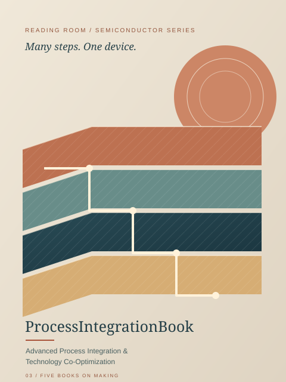
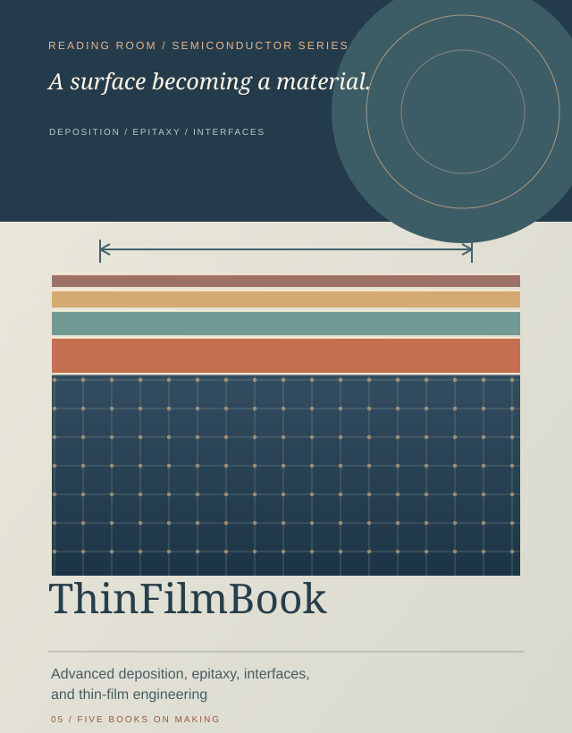

FOLLOW THE IDEA, FIND THE BOOK
From first
principle to real life.
Trace a path through power, measurement, process, and control — with published chapters at every stop.
FIELD MAP 01 Five published books · Twenty verified experiments
PUBLISHED ROUTES
Choose a starting point.
Each route begins with a real published book. Pick a chapter, then follow its related ideas.


A GENTLER PLACE TO EXPLORE
Little ideas have paths, too.
Explore three unpublished bilingual vehicle story drafts. Dinosaur, animal, and robot themes are proposals for later.
Explore together ↗